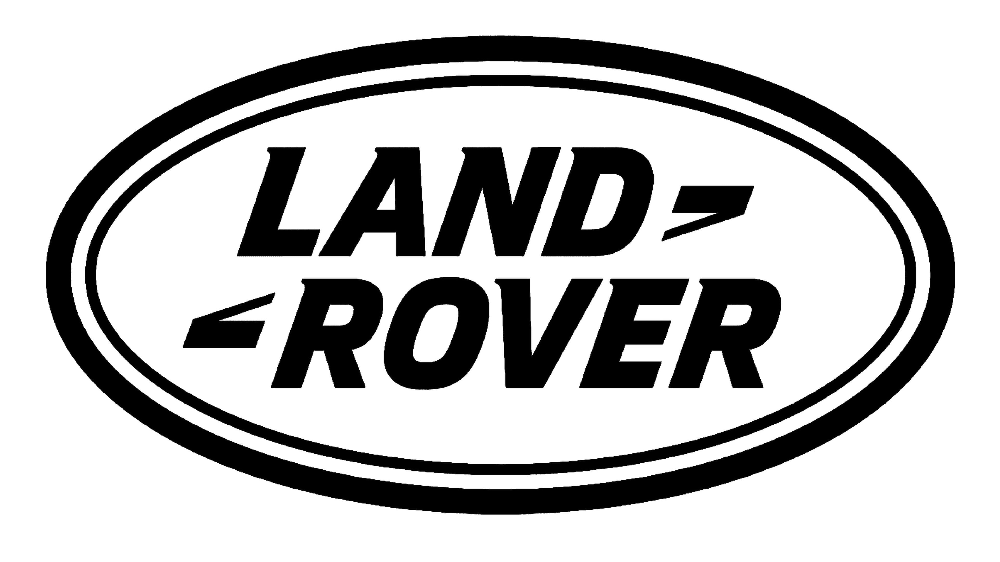

Land Rover
Aventura, Capacidad Todoterreno y Lujo Moderno

Land Rover es una marca británica icónica, reconocida mundialmente por sus vehículos con una capacidad todoterreno excepcional, su durabilidad y, más recientemente, su evolución hacia el segmento del lujo. Desde sus humildes comienzos como una herramienta de trabajo en el campo, Land Rover se ha transformado en un símbolo de aventura, exploración y sofisticación.
Historia y Origen
La idea del Land Rover surgió en 1947, cuando Maurice Wilks (ingeniero jefe de Rover Company) y su hermano Spencer Wilks (director general) concibieron un vehículo utilitario simple y robusto inspirado en el Jeep Willys americano. Estaba destinado a ser una herramienta para la agricultura y la reconstrucción después de la guerra, usando excedentes de aluminio militar.
El primer Land Rover se lanzó en el Salón del Automóvil de Ámsterdam en abril de 1948. Originalmente, solo se planeó como una solución provisional para mantener a Rover a flote. La carrocería inicial estaba hecha de paneles planos de aluminio (más disponible que el acero en ese momento) sobre un chasis de escalera. Era básico, pero increíblemente capaz. La marca evolucionó con los modelos Series II y III, ganando fama mundial por su robustez.
En 1970, Land Rover revolucionó el mercado con el Range Rover, combinando la capacidad todoterreno con niveles de confort y lujo nunca antes vistos en un 4x4. En los años 80 y 90, la gama se expandió con modelos como el Discovery y el Freelander (posteriormente Defender, Discovery Sport y Range Rover Evoque/Velar).
Land Rover ha pasado por varias manos: parte de British Leyland, propiedad de BMW (donde desarrollaron la segunda generación del Range Rover), luego de Ford (junto con Jaguar, en el Premier Automotive Group), y finalmente fue vendida a Tata Motors de India en 2008, formando Jaguar Land Rover (JLR).
Logros y reconocimientos 🏆
La capacidad todoterreno del Land Rover original y sus sucesores es legendaria. Se ha utilizado en expediciones, por organizaciones humanitarias (Cruz Roja, etc.), ejércitos y aventureros de todo el mundo. El Range Rover original creó el segmento de los SUV de lujo.
El Land Rover Defender (y sus predecesores Series I, II, III) es un icono automovilístico mundial, reconocido por su funcionalidad y diseño utilitario. La introducción del nuevo Defender ha sido un éxito.
Bajo Tata, Land Rover ha experimentado un enorme crecimiento global, con ventas récord impulsadas por la popularidad de la gama Range Rover y el éxito del Discovery Sport y el Evoque. Sus modelos han ganado numerosos premios por capacidad, diseño y lujo.
Innovaciones Tecnologicas
Sistemas de Tracción 4x4: Desarrollo constante de sistemas de tracción a las cuatro ruedas, incluyendo la introducción del bloqueo de diferencial central (en la Serie IIA).
Terrain Response: Un sistema pionero (introducido en el Discovery 3/LR3) que optimiza los sistemas del vehículo (motor, transmisión, diferenciales, suspensión) para diversos terrenos (arena, barro, hierba, nieve) con solo girar un dial. Ha evolucionado a Terrain Response 2, a menudo automático.
Construcción Ligera (Moderna): Uso extensivo de arquitectura de aluminio (PLA - Premium Lightweight Architecture) en modelos modernos como Range Rover, Range Rover Sport, Discovery, Velar y Defender para reducir peso y mejorar eficiencia y rendimiento.
Suspensión Neumática Adaptativa: Clave para el confort en carretera del Range Rover, permitiendo ajustar la altura del vehículo para todoterreno o autopista.
Tecnologías Todoterreno: Sistemas como Hill Descent Control (control de descenso en pendientes), Gradient Release Control, Wade Sensing (detección de profundidad de vadeo) y All-Terrain Progress Control (control de crucero todoterreno a baja velocidad).
Electrificaccion: Introducción de sistemas Mild Hybrid (MHEV), Plug-in Hybrid (PHEV) en varios modelos (Range Rover, Range Rover Sport, Defender, Discovery Sport, Evoque, Velar) y planes para vehículos totalmente eléctricos.
Impacto Cultural
Símbolo de Aventura y Exploración:Asociado a la exploración de lugares remotos y a la superación de terrenos difíciles.
Icono Utilitario y Militar: Durante décadas, fue un vehículo de trabajo esencial en granjas y para fuerzas militares y de emergencia en todo el mundo.
Transformación a Icono de Lujo: El Range Rover llevó la marca al mundo del lujo, convirtiéndose en un símbolo de estatus y estilo de vida en áreas urbanas y rurales.
Asociación con el Campo Británico: Ampliamente utilizado en zonas rurales del Reino Unido, se ha convertido en parte del paisaje británico.
Presencia Global: Reconocida y respetada en casi todos los países del mundo por su capacidad todoterreno.
Listado de Modelos 🚗
- Range Rover
- Range Rover Sport
- Range Rover Velar
- Range Rover Evoque
- Defender 90
- Defender 110
- Defender 130
- Discovery
- Discovery Sport
- Land Rover Serie l (1948-1958)
- Land Rover Serie ll y lll (1958-1985)
- Range Rover Classic (1970-1996)
- Land Rover Defender (Original 1983-2016)
- Discovery (Primera Generacion) (1989-1998)
- Freelander (Primera Generacion) (1997-2006)
Modelos en produccion


.jpeg)

.jpeg)


Modelos Iconicos
.jpeg)


.jpeg)
Datos curiosos:
- Origen del Volante Central: El prototipo original del Land Rover Serie I tenía el volante montado en el centro para simplificar la producción (no tenían que hacer versiones LHD y RHD inmediatamente) y parecerse a un tractor.
- Aluminio de Aviones: Se usó aluminio porque era más abundante que el acero justo después de la guerra, gran parte proveniente de excedentes de aviones militares.
- El Nombre: El nombre "Land Rover" era simplemente el nombre del modelo utilitario de la marca Rover. Con el tiempo, se convirtió en una marca propia.
- Camel Trophy: Land Rover fue el vehículo oficial del desafiante evento todoterreno Camel Trophy durante muchos años, poniendo a prueba sus límites en algunas de las regiones más difíciles del planeta.
- Los Primeros Números de Matrícula: Los tres Land Rovers de preproducción originales tenían matrículas con las letras HUE, lo que llevó a que el primer vehículo de producción sea cariñosamente conocido como "Huey".
- Más de 2 Millones de Defensores Originales: Se produjeron más de 2 millones de unidades del Defender original (y sus predecesores Series) entre 1948 y 2016.